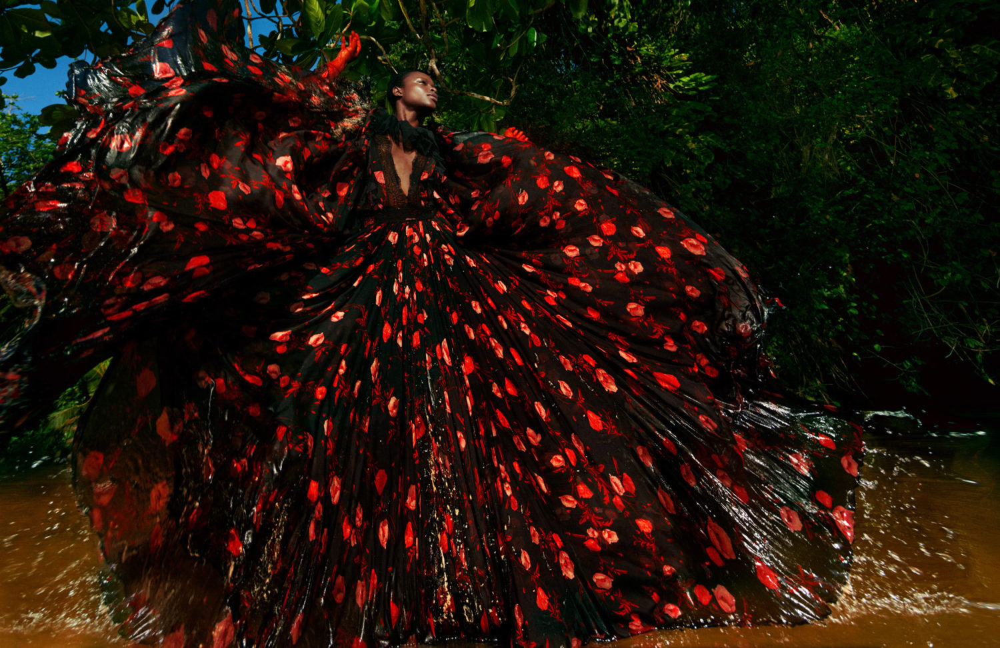

Single projects and visual experiments across design, AI, and other mediums.
Visual artifacts for brands and companies, alongside ongoing research into new techniques—the visible trace of work that never stops.
